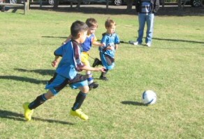

| Match Report - 08 May 2010 |
|
|
|
|
|
|
|
|
|
|
It was an early start at Holy Cross, but a beautiful sunny morning. The boys kicked
off with great energy and determination.
Holy Cross scored early in the game, but this did not deter our boys. Cooper, Hayden,
Jayden and Nicholas showed off their dribbling and goal scoring skills. Feli put up
great defence, never giving up. After Jack scored a goal, he got a taste for how good
it feels. He continued to lead the boys and score further goals with a determination
we look forward to witnessing again.

Player of the match was Jayden.

- Kylie Everitt
|
|
|
|
|
|
Wow!! The team's hard work at training really paid off with all the players showing
off their ever improving skills. Great passing, tackling and shooting by everyone
led to lots of goals and joyous celebrations (especially by the parents).
Everyone's involvement was fantastic and the game was played in a wonderful spirit.
A special mention for Jasmine who showed great determination all game to get to
the ball and also scored a great left-footed goal - a worthy recipient of this
week's trophy!
- Gena & Reid Swift
|
|
|
| U6 Red A |
|
North Ryde 11 - Ryde Panthers 1
|
|
|
|

It was a later start than normal down at Magdala but the game didn't start well
for the Under 6 Reds.
An early head clash left Alex on the ground feeling sore. The Ryde Panthers used
this opportunity to score their only goal for the match. Eventually the Reds started
to gel and started to dominate the younger Panthers players with speed and size.
Alex was back on shortly after and reinstated himself as an influential player.
Both Alex and Archie scored a couple of goals and were then instructed to look for
the passes. They both picked up this new tactic with ease. Unfortunately for the
Panthers an own goal contributed to their demise. From that moment on the Reds
started to gel and exacted their best ever 'come from behind' victory with five
different goal scorers.
Bailey showed initiative and had a couple of beautiful kicks. Cameron had a great
game, showing involvement and determination. Even a slight knock did not deter him
from getting up and going on.
It was an excellent team effort with Will and Jayden scoring their first goal for
the team, and Lucas his second. Alex was everywhere scoring a massive 4 goals. The
win was capped off by a long range goal from Archie.
Great team management skills from Paul who quelled a potential 'Red Frogs' riot
after the game.
Player of the week: Alex
- Reporter Graeme
|
|
|
|
|
|
A frosty morning saw the White As score their fastest goal ever and they were down
0-1 in the opening minute. Macquarie Dragons B were good sports and evened up the
score with a home goal of their own.
The teams traded a couple more goals with the tally going to 2-all and it was
looking like it would be a close game heading to half time.
Max lured to the opposition into thinking he wasn't playing then sprang a length
of the field solo goal that proved to be the turning point of the game. Two more
quick goals and the White As went to oranges (Oli went to apples) 5-2 up.
Things were pretty even through the second half with Ben coming back from his
weekend off in great form and he kept very busy for the whole game. Ash saved more
goals than the Dragons were able to score and Ryan strategically conserved energy
waiting to attack from within a metre of the goals. Toby kicked a sneaky goal from
a difficult angle to finish off the game with the White Ants winning, 7-4.
Toby took home the Piston Cup (and played with it all week).
- Chris (Toby's Dad)
|
|
|
|
|
|
Another good effort by the team in a match which saw both the full squad on the
pitch for the first time, as well as the first goal of the season scored!
Christian and Alexis were both busy in defence, time & time again running back
to defuse Putney's attacking raids. Riley was like a terrier chasing after the
ball all over the field, and Player of the Week Joshua again put himself in the
right place to fire a shot between the posts, after good lead up work by Blake
& Idan pushed the ball forward.
A good performance by a team that continues to improve every week. Well done!
- Will
|
|
|
| U7 Green |
|
North Ryde 3 - Gladesville Ravens B 1
|
|
|
|
Another lovely autumn morning with a 10.15am start at Magdala 4. Our U7 Green team,
faced the Gladesville Ravens B. Gladesville Ravens were kitted out in their Newcastle
United Football Club home strip.
Goals went to Finn, Evan and Aniruddh opened his account for the season.
Heroic saves by Evan's head, Aniruddh and Tom limited the Ravens opportunities. Will
and Hamish were spent charging up field and scrambling back defence. Our boys enjoyed
the taste of Magdala Hooch after a few too many trips.
Against the odds our boys brought the Ravens down finishing with a wining score of
3 to 1.
Man of the match - Finn!
Well Done Boys!
- Tony Saba
|
|
|
| U7 Red B |
|
North Ryde - Holy Cross College
|
|
|
|
We played really good. Everyone scored goals and Fletcher did our first header, and
it nearly went in the goal.
I passed to Patrick and he scored a goal and I gave him a big hug.
Vivek got the trophy.
- Luke Eastwood
|
|
|
|
|
|
Everyone looked keen to get going for a 9.15 start to the game at Morrison Bay
against Ryde District White A team.
The opposing team took their places and we were ready to go. Things got off to
a pretty slow start for our team with Ryde District dominating and scoring many
goals in the first half. We saw some terrific defending by Dom, Leo, Samuel and
Ibrahim. Jake, Leo and Emma did some great passing and Emma again did a terrific
job of marking her opponent and calling for the ball. After a hard time defending
the team were rewarded with some great attacking and goals scored by Dom and
Ibrahim.
The second half again saw the other team dominate but during this half the North
Ryde White A team seemed to regroup and spend more time attacking. We saw some great
attacking runs by Ibrahim, Dom and Isaak. Sam and Emma had some amazing shots and
Jake's sidelines kicks helped keep the ball forward.
A great game today, special mention must be given to the great defending done by
all players.
Congratulations to Dom for being voted Player of the week and staying on his
feet.
Well done coach and team.
- Tassie Strangio
|
|
|
|
|
|
This was an early mothers day gift for all our teams mums (and dads). Our first win
of the season and the first game that our coach could attend on a Saturday game.
Yeah Neil!
Yes it was a big week all round, emotions were running high both on and off the
field. The concept of holding a position and passing amongst the team is really
coming together now after all the teams hard work in these first few weeks of
training and Saturday games.
The game began with some strong attacking from HCC and Luca like a flash chased
down a ball from the half way line almost saving it on the line by sacrificing
himself into the goal. There is so much determination in this team, this was the
cue for Liam (our little pocket rocket) to convert 3 goals with the assistance
of his team mates, they were such fast goals that we had trouble identifying who
actually scored. NRS really played as team this week all helping and supporting
each.
Cameron was great as sweeper, he seemed to be everywhere, like a wall that HCC
were unable to penetrate. Liam, Rishi, Oliver, Kevin and Emily and Luca were
great in the midfield and were excellent in calling for the ball and finding free
space to to pass to each other; which they have been focusing on in training. The
game continued with such excitement leading to Kevin and Luca also scoring another
2 goals each, the high 5's and team embraces just kept coming.
Well done everyone!
The well deserved player of the match this week is Liam Eadie.
- Sarah Robson
|
|
|
| U8 Red B |
|
North Ryde Red B 2 - North Ryde Red A 1
|
|
|
|
Another warm sunny morning at Fontenoy and our boys were ready and raring to take
on the North Ryde Red A team.
It was a tough game and both teams demonstrated excellent defence skills. Jay,
Luke M, Blake and Jarrod displayed fantastic balls skills, teamwork and passing,
while goalkeepers Nathaniel and Kaiden made some great saves. Aiden and Luke A
played with great skill, each scoring brilliant goals from a distance.
The final score was 2-1 to Red B. Great game boys.
Player of the match was Jarrod.
- Kylie Everitt
|
|
|
|
|
|
It's 9am and this dedicated and impressive team of boys is warming up and preparing
themselves for a game that could go either way.
Our goalkeeper Tim is away today with tonsillitis so today we have Eli and Jett
sharing the goalkeeping duties. Thanks boys!!!
Within the first few minutes it's clear that there's going to be a lot of running
in this game. Besides the fact we are this year playing on the full field (which
the boys have adjusted to brilliantly) it seems the Kenthurst team are going to
chase us down.
Shannon is here, there and exactly where he needs to be - what speed and what
precision.
A timely pass from Jett to Oscar on the right side gives Oscar the ball and he lops
it over the goalkeeper and into the back left corner of the net. Go Oscar - the first
goal is all yours and the sideline erupts.
Adam has a burst and makes it all the way to take the goaly on but on this occasion
the goaly hugs that ball safely. It didn't go unnoticed that Oscar was running along
beside Adam ready for the pass - great positional play Oscar.
Go Charlie... he is running that ball well and playing hard. Patrick is strong and
he is showing Kenthurst that we are a team of skill and we enjoy our soccer with
great sportsmanship.
Eli saved an attempt by Kenthurst and kicked to Jack who was waiting in free space
but the ball came back and the North Ryde backs scrambled to defend but the ball got
through and the score is now even at 1-1.
Come on boys, we notice you're quiet this morning... start talking to each other!!!
Jett takes a shot, no luck, we have plenty of throw ins (keep an eye on those feet
boys - let's not give it away)!! Pauline is calling out 'elastic band' to the boys.
A string of team play after a great throw in from Jett to Tom H and Oscar passes to
Adam and Adam pops it in. 2-1 to NRS.
Jack is making space and clearing the ball up the sideline with ease. Chris is really
working hard and is proving valuable in defence.
Fabulous clearing from Tom M - as mother of the goalkeeper for this half I was
wanting to give Tom M a huge hug for keeping the goals safe! Great work by the team
for another attempt at goal. Oscar in free space but ball defended well by
opposition.
Free kick at the goal is awarded NRS and Adam is straight on target just a little
high. Bad luck Adam - good attempt. Within the next few minutes Adam scores and then
Kenthurst score an own goal off our corner. It's now 4-1.
David is jockeying relentlessly and he is defending and attacking with 110%
commitment. It has paid off for him he is able to take a magnificent long range shot
at goals and it hits the back of the net. Well done David - the crowd love it.
Eli has an attempt at goals from a corner and it was oh so close. Tom H is strong
in defence as always and today he had some great bursts through the middle and took
the ball up for the forwards to finish off.
Tom M does a cute and deliberate toe poke and scores a magic goal. Eli does a cool
flick (been watching too much tv).
Final score 6-1 to NRS. All boys played well today but the standouts for me were
David and Oscar! Well done all.
- Cindy Berghofer (Manager)
(The pictures above are a collection of the Div 1's
favourite players)
|
|
|
|
|
|
At North Ryde oval, in cool weather conditions, both teams on each side were
preparing for a tough match ahead.
First Half
The first half consisted of lots of tackling and scoring a goal! The goal was
performed by Lawrence, taking the ball up the line, getting tackled by the
opposition, but eventually scoring the goal.
Unfortunately we let in a goal for the opposition. Not long after they had scored
this goal, Harrison and Nicholas took the ball up the line and were tackled solidly
by the other team and the ball went out and was called corner. Harrison booted the
corner straight to Nick and Nick almost got it in but one of the other team's players
deflected it into the net! They came back with amazing defence and it was too hard
to score a goal. Finally the referee blew the whistle for half time. The score was
2 - 1 to North Ryde.
Second Half
During the second half the forwards and the midfielders were extremely tired and
couldn't score a goal and Putney kept on attacking with fierce strength. Some of the
forwards and midfielders heard cheers from the other team which probably meant that
they scored a goal. Shortly after that they scored again! Finally we went onto the
field. No one ever got past the defenders. The fullbacks had a hard time trying to
defend the counter attacks of the Putney Rangers and their chances to score goals.
Before the end of the match they almost scored and put a lot of pressure on us,
luckily we cleared it and had taken pressure of our fullbacks.
They unfortunately won the match, it was so close! And after all they were a tough
team and every one of us has done very good job! Final score 3 - 2 to Putney Rangers.
- Alvin Cheng
|
|
|
|
|
|
The 12/6s travelled to View St and despite putting on a brave display were outclassed
by Redbacks, who remain undefeated and top of the ladder.
Despite the score there were a number of positives coming out of the match, none more
so than the outstanding goal keeping display put on by Dom who was the deserving
player of the week. Dom is emerging as a real talent in goals and his bravery and
skill in the box caught not only the attention of his own team but also the Redback's
coaches and parents who were highly complimentary of his efforts after the match.
Great stuff Dom!
The boys were down 3-0 at half time and despite being up against the frontrunners,
dug deep in the second half and were unlucky to concede a single goal early in the
second half. The second half performance in particular reflects the continued growth
and development of the team with the boys continuing to apply the skills that they
learn at training to the game day.
Perhaps the most pleasing thing to witness is a growing bond between the boys who
continue to work hard and support each other on the pitch right up until the final
whistle. The supporters witnessed some great passing notably between Jackson, Alex and
Kevin down the left side where they cut the opposition to ribbons on a number of
occasions. Keep this up boys!
Other standout efforts were Will and Connor putting in determined displays on the
weekend. Finally a special thanks to Ahmed from the U10's, who chipped in to help.
Ahmed didn't stop running all day and filled a vital gap in the team.
- David Hoy
|
|
|
|
|
|
Starting the game with 15 players (4 reserves), Lewis was happy to be back from
injury and played as goal keeper. The team were keen and ready to test the No 1
Epping Eastwood team.
They made a strong start, which lead to some good attacks, and soon an excellent
goal by Mana, first ever, after the goalie failed to retain the ball.
Cameron made many strong headers and helped Lewis with goal Kicks. Ben and
Hayden played well in the midfield! The score at half time was 1-0 to North Ryde.
Paul encouraged the boys and warned them of dropping their intensity. The Epping
Eastwood no 14, their star shooter, was shadowed by Luke, who looked half his size
but that did not intimidate him as he out ran him every time, much to the joy of
the NRS parents!
However, after a corner and a loose ball Epping Eastwood scored, 1-1. Chris was
playing stopper and made many strong runs in collecting the kicks that went deep
into our half. Hayden made a strong goal shot only to have the ball edge over the
top goal post by their goalie, good play from both players! Cameron, Harry and Ben
also had good shot's but to no avail. Kyle, Daniel Tidke (dripping with blood from
a knee wound), Daniel Greco, Tim, Nathan, Kevin (not 07) and Mitch all should be
mentioned as they all put in an excellent effort.
The second half was a good contest which I am sure every parent enjoyed it as it was
good clean soccer!
Final results 1-1 draw. Player of the match was Mana Singh and the trophy was
presented by Cathy Chan. I would like to thank all the parents who come and support
our team, you do make a difference.
- Joe Rosenfels (Manager)
|
|
|
|
|
|
Another strong effort by the team, however not the result we would have liked. The
team generally played well in patches and created some goal scoring chances of their
own, however some indecision when in scoring positions negated these opportunities.
Once again the team conceded another penalty highlighting the need for defenders to
remain calm and not panic when under pressure. There were encouraging aspects to this
game however and despite the scoreline there was a noticeable improvement in defence
and also with the passing and teamwork in attack.
Lewis B played strongly in attack, Sam B was once again strong in goals making some
excellent saves. Josh C played well at the back and captain Liam T put in wherever
he was placed by the coach. Heads up everyone, things will improve especially if we
can continue with the excellent attendance at training. Expect some goal shooting
practice this week.

- Bill Greer (Manager)
|
|
|
|
|
|
The much awaited clash between North Ryde's finest and the Carlingford Redbacks was
scheduled to the unusual time of 9am on Mother's Day Sunday. This early start didn't
keep the crowds away, and a few unlucky punters unfortunately had to be turned away,
missing the Panasonic Big Game Match of the Round. Our heroes were pumped coming
into this game, they were one point ahead of the Redbacks on the table and a win
today would cement their spot as second on the ladder.
The men were gathered at the sheds comparing notes on the divorce papers they knew
were waiting for them when Crusher strolled up to the squad, with his chin jutting
to the sky, and began on one of his famous pre-game speeches. These speeches would
put a TV evangelist to shame with their unbridled emotion, and Crush himself has been
known to shed a tear during these heartfelt sermons. During this Hillsong performance
he informed our heroes that for the biggest game of the year they were going to have
to play the full 90mins with no subs, and a loss today could drop them out of the top
four. The effect of this news was immediate on these proud men, to a man they stood,
clenched their jaws... their eyes glazed over in a steely stare... with fists at
their sides they ran onto the park and took their positions, a full 5 minutes before
the referee sauntered out to the centre circle.
The large crowd went silent and the tension in the air thickened like pea soup...
then the piercing shrill of the whistle tore open the fabric of silence... signalling
that the game had started. The game writhed and wrestled as two powerful teams locked
horns on the pitch, the noise from the crowd caused confusion on the field as their
deafening roar made it near impossible for either team to hear their calls.
Our heroes showed their class with some exquisite passing matched only by their
ferocious defence, the Redbacks were not taking a back step and the game was being
played on a knife's edge... something had to give. At the 32-minute mark the pressure
of the constant onslaught cracked the Redbacks midfield, and another late and
dangerous tackle was made on North Rydes finest. The Redbacks player, clearly
bewildered by the class of play around him then verbally lashed out his opposite
number... "Aussie Dan" just stood his ground, and with a lopsided grin calmly winked
at his foe... this non chalaunt attitude only inflamed the Redback further... and a
minute later saw him staring at a yellow card as yet again he brought Aussie to the
ground 25 yards out from the Redbacks goal. Aussie slowly got to his feet, dusted
himself off... the referee approached him to check on the large gashes to his face,
but Aussie Dan just shooed him away as he readied himself for the free kick... A deft
tap wide of the wall opened up the goals for Aussie, who eased the ball into the back
of the net like he was fleecing a sheep. North Rydes finest jogged to the sheds under
thunderous applause with a 1 - 0 lead.
The second half went much like the first, the quality of play from both teams was
breathtaking, with our heroes coming out on top in most exchanges with a points
decision... The Redbacks subbed their bench onto the park in a last-ditched effort
to snatch a draw from these weary blue and gold men. The mighty North Ryde Bushboys
reached deep into their souls, and banded together to repel these attacks, with some
last-ditched defence that stunned the enormous crowd with its never-say-die passion.
North Ryde 1 - Redbacks 0 will be the words whispered from fathers to sons in years
to come, when starry eyed boys ask their fathers... "Where were you Dad, Mothers Day
2010?"

- LJ Woodford
|